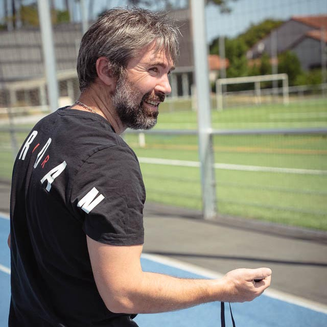
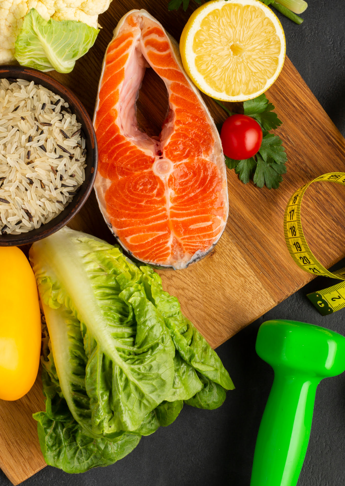
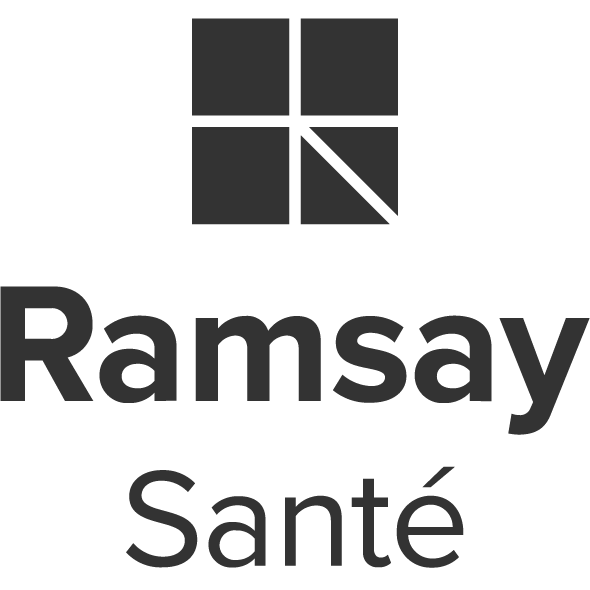
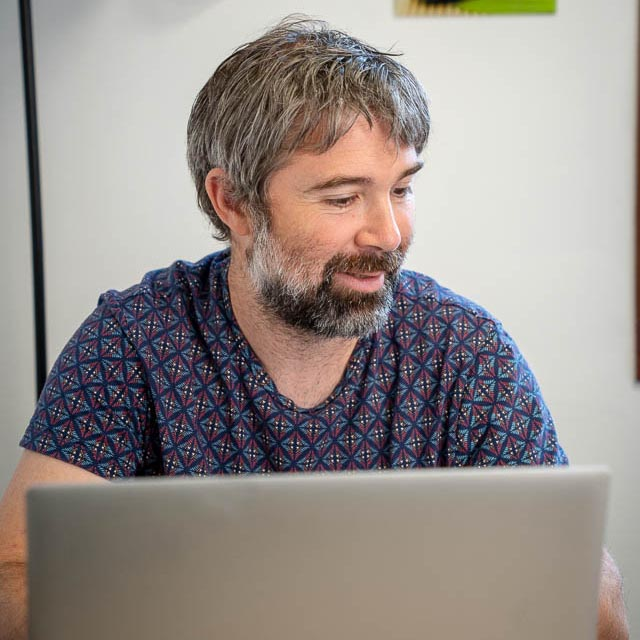
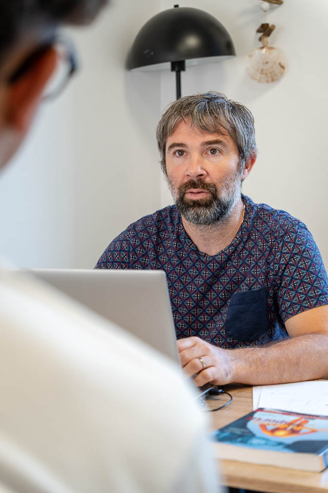

Fabien Lageyre
Diététicien-nutritionniste & éducateur sportif dans les Landes (40)


Qui suis-je?
Formé dans le domaine du sport (Licence STAPS – entraînement sportif, préparation physique et mentale), j’ai enrichi mon parcours avec un BTS Diététique, puis une spécialisation en nutrition du sportif.
Aujourd’hui, je mets à votre service une double compétence en alimentation et en activité physique pour vous proposer un accompagnement global et personnalisé, que ce soit en consultation diététique, en coaching sportif ou en rééquilibrage alimentaire.
Mon approche
Une prise en charge complète et adaptée à vos besoins.
Quel que soit votre objectif :
- perte de poids,
- optimisation de l’alimentation du sportif, préparation à une compétition, - accompagnement d'une pathologie (diabète, cholestérol, obésité...).
Je m’adapte à vous, à votre rythme de vie et votre état de santé.
Mon approche repose sur les quatre piliers essentiels à la santé :
l'alimentation, l'activité physique, la gestion du stress et la qualité du sommeil.



Mes formations
- Licence STAPS "entraînement sportif / préparation physique et mentale"
- BTS Diététique
- Formation privé "Nutrition du sportif"
- Bases de la micronutrition
- Micronutrition adaptée aux situations de diabète et d'obésité
- Alimentation du marathonien, du footballeur...
- Formation HACCP
Ils m'ont fait confiance
- Clinique pédiatrique Montfort en Chalosse
- CERS Capbreton
- US DAX Rugby Landes
- Micro-crèche Maëlaïa Narrosse
Mes engagements
- AFDN
- REPPOP Nouvelle Aquitaine
- CPTS Bassin Dacquois
- CPTS Côte Sud
Suivi personnalisé
J’écoute attentivement vos habitudes, vos contraintes et votre positionnement pour construire un accompagnement qui vous ressemble. Mon objectif est de vous accompagner vers l'autonomie à partir de contenus solides et durables. Ensemble, nous mettons en place un programme nutritionnel et/ou sportif personnalisé, adapté à votre mode de vie. Devenez acteur de votre prise en charge et progressez à votre rythme, sans frustration ni pression inutile.
Double expertise
En tant que diététicien-nutritionniste et éducateur sportif, je vous offre une prise en charge globale. Que votre objectif soit la perte de poids, l’optimisation de vos performances ou l'amélioration de votre santé, je mobilise mes compétences croisées pour vous proposer des solutions adaptées.
Résultats durables
Mon objectif est de vous aider à construire de nouvelles habitudes durables. Grâce à un suivi régulier, des outils d’évaluation et des conseils pratiques, vous devenez acteur de votre santé pour maintenir vos progrès sur le long terme.
